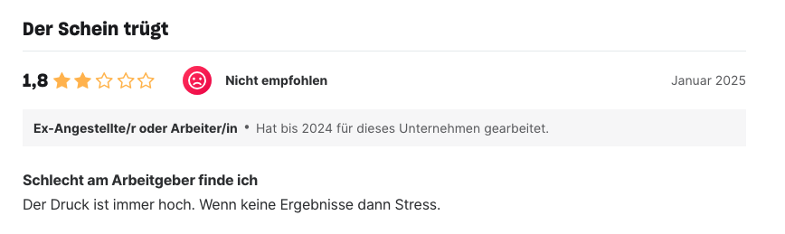
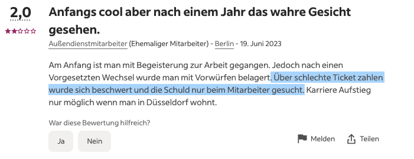
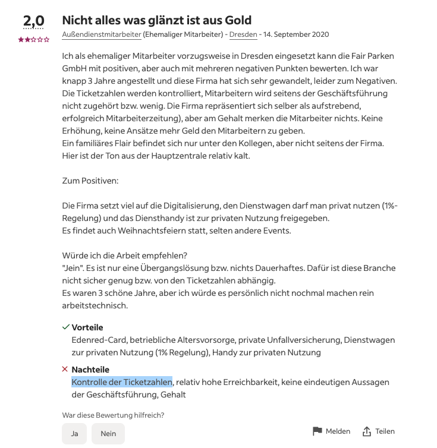
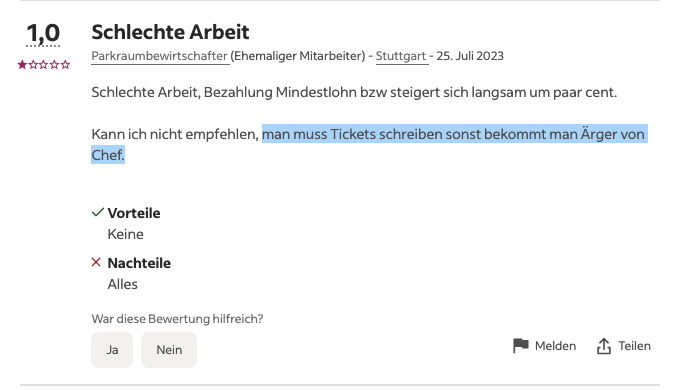
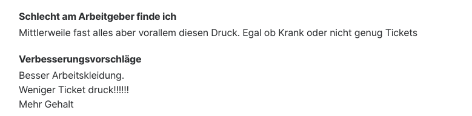
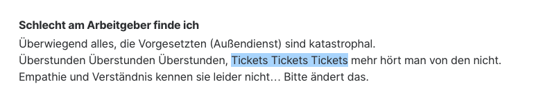
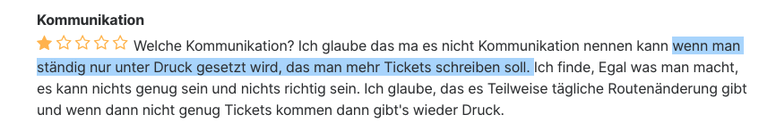
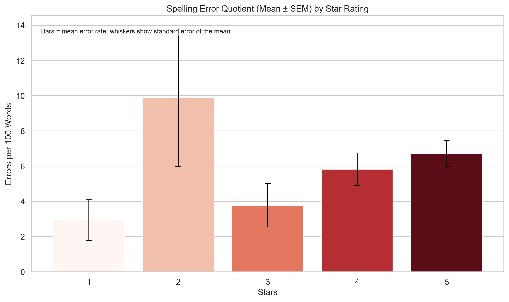
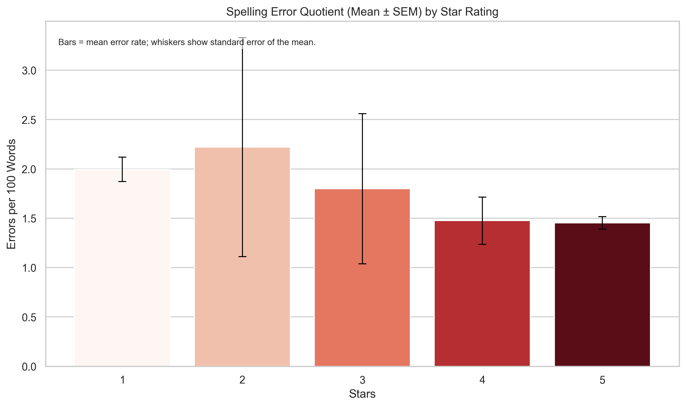
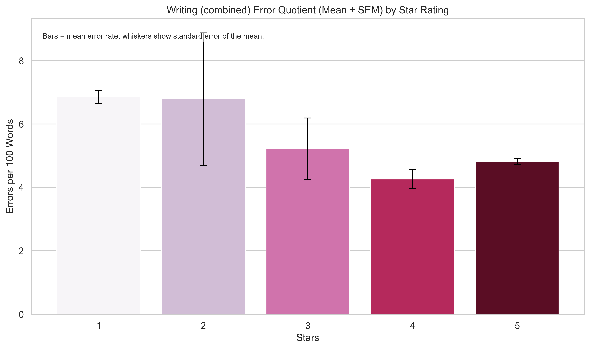

Table of Contents
Uns autofahrende Großstädter eint ein Leid: Die Parkplatzsuche. Parkraum ist Mangelware, Parken ist teuer und die Suche nach Parkplätzen kostet Zeit, Kraftstoff, Geld und wahrscheinlich stirbt auch jedes mal ein süßes kleines Rehkitz, wenn wir eine dritte Runde um den Block drehen um einen freien Platz für unsere stinkend-laute Stahlwanne zu finden. Aber wie wusste schon ein berühmtberüchtigter zeitgenössischer Autor:
Autobesitzer sind wahrlich nicht empfänglich für eine [rationale] betriebswirtschaftliche Kosten-Nutzen- Rechnung.
(aus: Dit is Berlin, Nicky Reinert, 2018 amazon.com)
Wie dem auch sei: Zum Glück gibt es Institutionen wie das Ordnungsamt, die die regelkonforme Nutzung öffentlicher Verkehrsräume überwachen. Dabei sind sie mal mehr, mal weniger streng. Mit Berufung auf das Prinzip des Ermessensspielraums darf gerne auch ein Auge zugedrückt werden. Wer mal die Parkscheibe vergisst, kommt mit 20 Euro davon, vielleicht auch einer Ermahnung, wenn es nur ein kurzer Sprint in den Supermarkt war.
Doch es gibt auch die Flächen, die nicht in das Obrigkeitsgebiet des Ordnungsamtes fallen. Private Parkplätze vor Supermärkten, Apotheken, Kinos oder anderen Einrichtungen. Und hier hat sich in den letzen Jahren ein interessantes Geschäftsmodell entwickelt: “Parkraumanangement”.
Das ist dir sicherlich auch schon aufgefallen. Immer öfter säumen und bevölkern sie die Parkflächen vor ALDI und Co: Schilder, die das Auslegen von Parkscheiben vorschreiben. Sonst droht eine Vertragsstrafe.
Durch den Einsatz innovativer Technologien, wie Kennzeichen-Erkennung mit Kameras und Schrankensystemen sollen Fremd- und Dauerparker effektiv und kostengünstig ferngehalten werden. Momentchen mal, Fremdparker - einverstanden. Aber Dauerparker? Was ist falsch daran, kein Fremd- sondern Dauerparker zu sein? Bin ich damit nicht auch Kunde des Geschäfts? Muss ich mich beim Einkaufen nun extra beeilen, darf nicht mehr in den Auslagen von LIDL stöbern? Wird hier etwa mit Flosklen um sich geworfen, um ein fragwürdiges Geschäftsmodell schön zu reden?
Das vielleicht größte Unternehmen in dieser Branche in Deutschland scheint die “Fair Parken GmbH” zu sein. Woher glaube ich das zu wissen? Nun, auch ich hatte schon das zweifelhafte Vergnügen, das Unternehmen kennenzulernen. ~30 Euro Vertragstrafe für 3 Minuten im Supermarkt des Vertrauens. Kein Dauerparker, kein Fremdparker. Klingt nicht fair. War es auch nicht. Meine Neugier war geweckt.
Was macht Fair Parken?
Dort, wo die Technologie nicht zum Einsatz kommt oder kommen kann, setzt man auf den Beruf des “Parkraumüberwachers”, der selbstständig die Einhaltung von Parkvorschriften überwacht. Wetterfest und mit dem eigenen Fahrzeug.
Ein Blick auf kununu verrät: Obwohl das Jahr 2025 gerade erst Fahrt aufgenommen hat*), ist die Fair Parken mit 4 von 5 Sternen jetzt schon Top Arbeitgeber 2025 (im Bereich Transport/Verkehr/Logistik). Das “Top Company-Siegel” muss man übrigens kostenpflichtig bestellen und kostet für ein Unternehmen dieser Größe knapp 3.000 Euro.
*) Meine Recherchen haben Anfang 2025 begonnen, die Aussage stammt aus dieser Zeit.
Wie dem auch sei, ich bin, tatsächlich ganz unironisch, fest davon überzeugt, dass das Unternehmen das Siegel verdient hat. Auf Kununu finden sich zahlreiche positive Bwertungen, auf Indeed kommt das Unternehmen ein bisschen schlechter weg.
Zunächst gibt es zwei Fragen, die mich umtreiben:
-
Wenn die ParkraumwächterInnen im Winter und im Sommer Parkplätze in ihrem eigenen Fahrzeug überwachen, läuft dann die ganze Zeit die Klimaanlage bzw. der Motor? Oder fahren sie die Parkplätze eines bestimmten Bereiches ab?
-
Wenn die ParkraumwächterInnen einen Parkplatz überwachen, wäre es nicht sinnvoller und zielgerichteter, die Parkverstöße direkt anzusprechen und z.B. auf eine vergessene Parkscheibe hinzuweisen, anstatt wortlos “Knöllchen” zu verteilen? Man ist ja sowieso vor Ort und kann mit den Menschen in Kontakt treten. Auch das Ordnungsamt lässt ja durchaus mit sich reden.
In diesem Zusammenhang lohnt ein Blick auf die Bewertungen ehemaliger ParkraumwächterInnen. Zwar handelt es sich hier nur um einen Auszug, trotzdem kratzen derartiuge Bemerkungen natürlich an der glänzenden Fassade:
|  |  |  |  |
|  |  |  |
(Quelle: https://www.kununu.com/de/fairparken/kommentare?score=subpar,satisfactory und https://de.indeed.com/cmp/Fair-Parken-1/reviews?fcountry=ALL&sort=rating_asc)
Eine Möwe macht noch keinen Sommer. Derartige Bemerkungen hinterlassen ein Geschmäckle, sind aber kein Beleg für widerrechtliche Handlungen.
Wie steht es um den Datenschutz?
Hinweis Meine folgenden Untersuchungen fanden Mitte 2025 statt. Ich habe das Unternehmen mit meinen Erkenntnissen konfrontiert und um Stellungnahme gebeten. Die meisten Punkte hat das Unternehmen inzwischen behoben, was positiv anerkannt werden muss. Ob das aus eigenem Antrieb oder auf mein Wirken hin geschehen ist, kann ich nicht sagen. Ich werde die entsprechenden Anpassungen hier so gut es geht hervorheben.
Einen Verstoß gegen die Parkvorschriften, auch wenn er nur drei Minuten dauert, ahndet das Unternehmen mit einer Vertragsstrafe von 29,00 Euro. Zwar kann man sich nachträglich per Kassenbon von dieser Schuld befreien. Aber wer lässt sich bei jedem Kleinstbetrag einen Kassenbon aushändigen? Schauen wir doch mal, ob FairParken bei der Umsetzung gängiger Datenschutzvorschriften ähnlich streng agiert.
Dark Pattern
Als “Dark Pattern” bezeichnet man graphische Oberflächen, die NutzerInnen zu einer bestimmten Interaktion verleiten sollen. Im einfachsten Fall sind das bestimmte Signalfarben, wie z.B. “Grün”, das als positives Signal wahrgenommen wird. “Dark Pattern” sind laut DSGVO, DSA und UWG nicht erlaubt.
Das ist der Consent Banner auf fairparken.com:
Beim Klick auf “Alles Akzeptieren” verschiebt sich der Schalter für “Analyse” mehr oder weniger unaufällig nach “rechts”.
Update: Inzwischen wurde der Consent Banner angepasst und ist etwas transparenter gestaltet:
Consent Verwalten
Es gehört zum guten Ton, dass ein Consent im Nachhinein korrigiert werden kann - in beide Richtungen. Die gängigsten Consent Management Plattformen nutzen dafür ein kleines UI Element. Auf der Seite von User Centrics ist das ein stilisierter Fingerabdruck:
Auf fairparken.com gibt es diese Möglichkeit nicht. Die einmal getroffen Entscheidung kann nicht wieder zurück genommen werden. Weder über ein schwebendes UI-Element, noch im Footer noch auf der Datenschutzseite.
Update: Inzwischen wurde auch hier nachgebessert. Ein kleiner blauer Button unten links ermöglicht es, den Consent zu ändern.
Tracking Technologien
Update Auch hier hat Fair Parken nachgebessert und sehr vorbildlich reagiert. Der Banner zeigt nun weitaus ausführlicher, welche Technologien eingesetzt werden.
Kaum eine Website kommt heutzutage noch ohne Tracking Technologien aus. (Die Seite nickyreinert.de ist so eine unrühmliche Ausnahme, und der Typ schimpft sich Data Analyst!). Diese Technologien müssen in der Regel im Consent Banner, wie wir ihn oben sehen, und in der Datenschutzerklärung aufgeführt werden. Die gesetzlichen Grundlagen dafür sind manigfaltig, angefangen beim alten Hasen DSGVO bis zum DSA oder dem TTDSG.
Laut Consent Banner setzt die Webseite zwei essentielle Cookies ein:
1Contao HTTPS CSRF Token
2PHP SESSION ID
Daneben wird der Einsatz einiger Google Dienste erwähnt.
Ist man eine Weile auf der Seite unterwegs, kommt man zusätzlich mit den folgenden Diensten bzw. Tracking-Calls in Berührung:
- bat.bing.com
- mouseflow.com
Aber ist das schon alles?
Neben den korrekt erwähnten Technologien setzt die Seite außerdem die folgenden Cookies:
- Google
- _gcl_au
- _gcl_gs
- _gcl_aw
- Bing:
- _uetsid
- _uetvid
- _uetmsclkid
- MUID
- MSPTC
Die letzten beiden Cookies sind schwer zu finden, da sie für die Domain bing.com gesetzt werden. Der Initiator dafür ist aber ein Script auf fairparken.com und diese Cookies fallen damit in den Verantwortungsbereich von Fair Parken.
Nun muss dazu gesagt werden, dass die diversen Tracking-Calls zu Google und Bing Parameter enthalten, die eine personenbezogene Verarbeitung auf den Seiten der Anbieter verhindern sollen. Bei Google ist es z.B. der Parmaeter npa=1. Trotzdem werden neben der IP-Adresse auch ganz klar eindeutige IDs übermittelt, bei Bing z.B. über den Parameter ti. Gelangt man über Google Ads oder Bing Ads auf die Seite, werden mit der gclid und msclkid auch Klick-IDs erfasst, ebenfalls eindeutige Identifikatoren.
Was ist daran auszusetzen? Erstens wird Bing nirgends erwähnt. Zweitens werden die Tracking-Calls immer abgesetzt, unabhängig vom Consent. Man kann argumentieren, dass Google die Daten serverseitig “verwirft”. Trotzdem wird hier aber z.B. immer meine IP-Adresse übermittelt. Technisch wäre es durchaus möglich, erst nach erfolgreichem Consent den HTTP-Tracking-Request abzusetzen.
Doch damit noch nicht genug. Auf dem Karriereportal von Fair Parken, jobs.fairparken.com, wird ein anderes CMS und ein anderer Consent Dialog eingesetzt. Der Consent Dialog ist hier vorbidlich neutral gestaltet. Auch gibt es eine Möglichkeit, das Einverständnis zu widerrufen.
Allerdings wird auf der Seite Matomo/Piwik eingesetzt und zwar nicht durch Fair Parken sondern den Anbieter der HR-Plattform, nämlich Softgarden:
matomo.softgarden.io/matomo.php?ping=1&idsite=2662&rec=1&r=067444&h=12&m=12&s=43&url=https://jobs.fairparken.com
Das Analytics-Tool Matomo wird zwar gemeinhin als datenschutzkonform betrachtet, aber trotzdem drängt sich die Frage auf, warum Matomo nirgends aufgeführt wird, auch nicht in der Datenschutzerklärung.
A pro pos Datenschutzerklärung…
Datenschutzerklärung
Update Hier hat Fair Parken ebenfalls nachgebessert. So wird nun z.B. der Einsatz von Rapidmail für den Newsletter-Service erwähnt. Allerdings wird auf der Karriere-Seite immer noch eine PDF-Datei verlinkt, die nicht barrierefrei ist.
Keiner mag sie, aber alle “wollen” sie. Also, zumindest alle Juristen, die sich mit Datenschutz beschäftigen. Die Datenschutzerklärung muss einfach zugänglich und barrierfrei sein. Eine PDF-Datei ist nicht einfach zugänglich und barriererfrei. Aber genau so wird sie auf jobs.fairparken.com angeboten, nämlich als PDF-Datei:
Und auch auf der Hauptdomain fairparken.com verhält sich die Datenschutzerklärung eher auffällig:
https://www.fairparken.com/de-DE/datenschutzerklaerung.
Die Anleitung zum Setzen eines Opt-Out-Cookies ist umständlich nur über ein Browserplugin möglich und der Link zum Datenschutz bei Google ist veraltet (https://www.google.com/intl/de/analytics/learn/privacy.html)
Zusammenfassung
Sind das jetzt schon diese eklatanten Verstöße gegen gängige Datenschutzvorschriften? Eigentlich handelt es sich um Kleinigkeiten, aber davon eben nicht wenige.
Keiner der oben genannte Dienste wird in der Datenschutzerklärung oder dem Consent-Banner erwähnt (bis auf Google in Teilen und Mouseflow). Auf der Seite werden aber noch andere Dienste Dritter ungefragt eingesetzt, darunter Publuu, Cloudfront und dem Cloud-Dienst von Amazon, AWS. Und dann gibt es ja noch den Newsletter-Anbieter, der nirgends erwähnt wird (mittlerweile wird hier Rapidmail erwähnt, der Anbieter wurde offensichtlich, vermutlich zwischenzeitlich gewechselt).
Im Prinzip scheint das nicht sonderlich verwerflich zu sein, aber dass keiner der Dienste mit nur einem Wort in der Datenschutzerklärung erwähnt wird, ist erstmal bemerkenswert. Auch eine Anfrage zur Datenauskunft, ein Recht dass die DSGVO einräumt, wird nur mit ein paar geschäftsprozessbezogen Datenpunkten geantwort. Kein Hinweis auf Online-Technologien. Nicht einmal meine Anmeldung zum Newsletter wird dort aufgeführt.
Natürlich habe ich das Unternehmen um Stellungnahme gebeten. Zunächst hatte man weder auf meine Bitte zur Stellungnahme noch meinen Wunsch auf Datenkorrektur geantwortet. Bis dahin hatte ich auch “nur” mit dem “internen Datenschutz” Kontakt. Erst nach mehrmahliger Aufforderung, dem ausdrücklichen Verweis auf die entdeckten “Missstände” und mit mehreren Wochen Verzögerung nahm der “bestellte externe Datenschutzbeauftragte” Kontakt mit mir auf und ich erhielt eine vollständige Datenauskunft.
Ist das Prinzip, dass man nur dann eine vollständige Auskunft erwarten kann, wenn man weiß, welche Daten hier erhalten sein müssen und dementsprechend nachfragt?
Google Maps Rezensionen
OK. Datenschutz. Langweilig. Was gibt’s sonst noch? Ach ja, Rezensionen. Wie denken denn die anderen KundInnen über Fair Parken? Gerade im Straßenverkehr geht es nicht gerade zimperlich zu. Und offenbar ist das Thema Parkraumanagement ein Reizthema. Der Spiegel titelt erst neulich:
Weiter geht es mit:
-
Wie kann ich mich gegen Parkknöllchen von Inkasso-Firmen wehren?
-
Knöllchen beim Einkaufen: Parkplatz-Kontrollen sorgen für Ärger.
-
Knöllchen auf dem Supermarkt-Parkplatz: Regeln für private Strafzettel.
-
Playfair-Parking e.K. fordert unangemessen hohe Gebühr für fehlende Parkscheibe
Die Fair Parken GmbH wird gerne aber auch ganz konkret kritisch angesprochen:
Vor allem in sozialen Medien macht man seinem Ärger Luft:
Und so weiter und so fort - an Kritik soll es also nicht mangeln. Das klingt nicht gerade nach dem beliebtesten Geschäftskonzept der Republik, oder?
Vielleicht kickt auch nur der Confirmation Bias rein. Was sagt denn die vertrauenswürdige Quelle Google Maps?
Dort verzeichnet Fair Parken mehr als 15.000 Bewertungen mit einem Durchschnitt von 4,2 von 5 Sternen:
Momentchen mal. über 15.000 Bewertungen? 4,2 Sterne? Das klingt viel, oder?
Mein Forscherdrang ist geweckt, also hab ich mir die Daten mal etwas genauer angeschaut, um der Frage nachzugehen, ob es sich hier um organische Bewertungen handelt.
Hinweis An alle zugeschalteten RechtsanwältInnen: In dubio pro reo. Es handelt sich hierbei ausdrücklich um Mutmaßungen, die auf Indizien beruhen. Es geht hier ganz ausdrücklich nicht darum, Beweise für eine Manipulation zu finden. Dafür ist die Datenlage zu dünn. Ich will die Gelegenheit aber nutzen, um das Verhalten von RezensentInnen auf Google Maps einmal näher zu betrachten und Muster oder Auffälligkeiten zu finden, die diese Beobachtung erklären - nicht validieren oder falsifizieren. Nur weil ich schlechte Erfahrungen gemacht habe, muss das nicht für jede KundIn gelten. Wie oben schon erwähnt: Ich glaube weiterhin an das Gute im Unternehmen!
Was auf den ersten Blick auffällt: Auf Trustpilot sind es gerade mal 1.358 Rezensionen mit einer Bewertung auf der gleichen Skala von 2,2.
Die Abgabe von Rezensionen auf Google Maps ist weitaus bequemer. Das dürfte die hohe Anzahl Rezensionen erklären.
Was für mich aber schwer nachvollziehbar ist, ist die umgekehrte Stimmung: In der (Verkaufs-)Psychologie kennen Experten den sogenannten Negativitätseffekt. Das heißt, dass Menschen negativen Erfahrungen mehr Bedeutung beimessen. Die Folge ist, das haben Studien gezeigt, dass man eher dazu neigt, negative Bewertungen abzugeben. Für Unternehmen ist das ein großes Problem: Sie sind natürlich bemüht, auch glückliche KundInnen dazu zu bewegen, das Produkt oder Unternehmen positiv zu bewerten. Stattdessen verirren sich oft nur notorische Nörgler auf die Unternehmensseite und motzen rum. Das ist nicht immer ganz einfach und mitunter werden hier fragwürdige Maßnahmen eingesetzt, um auch mal an positive Bewertungen zu kommen.
Nun liegt es im Auge des Betrachters, das Geschäftsmodell von Fair Parken zu mögen oder eben nicht. Dem Anschein nach gelingt es aber, vor allem glückliche Kunden zu aktivieren und zu einer Bewertung zu bewegen.
Um einen besseren Eindruck zu bekommen, habe ich mir als “Kontrollgruppe” andere Unternehmen der selben Branche und zwei branchenfremde Vertreter angeschaut: Die GEZ - die in Deutschland bekanntlich nicht den besten Ruf genießt - und einen Aldi Supermarkt.
Die GEZ gibt es seit 2012 nicht mehr, seit dem heißt es ARD ZDF Deutschlandradio Beitragsservice (bis vor kurzem hieß es übrigens noch “Beitragsserver”, auf den Seiten der Stadt Köln ist das sogar noch nachvollziehbar):
Die “Popularität” verhilft der “GEZ” zu immerhin über 3.500 Rezensionen. Auch das ist aber noch weit entfernt von erstaunlichen 15.000 Bewertungen.
(Mitte 2025 waren es übrigens über 3.500 Rezensionen - da hat wohl jemand aufgeräumt!)
Supermarkt-Kunden dürften eine vergleichsweise wertvoll Kontrollgruppe abgeben, handelt es sich dabei doch zumindest zum Teil um das gleiche Klientel! Leider gibt es keine Suchmaschine, die mir Supermärkte nach Anzahl der Rezensionen nennt, also musste ich mich so auf die Suche machen und bin auf einen Aldi in Köln gestoßen. 4,1 Sterne bei 1.588 Bewertungen - immerhin!
Jetzt schauen wir uns mal den Wettbewerb an. Die folgende Tabelle zeigt Unternehmen, die mit einem ähnlichen Geschäftsmodell unterwegs sind. Lediglich die ParkRaumManagement PRM GmbH kommt auf ein leicht besseres Ergebnis mit weitaus weniger Bewertungen.
| Unternehmen | Bewertung | Anzahl Bewertungen | Gründungsjahr | Mitarbeiterzahl | Umsatz | Quellen |
|---|---|---|---|---|---|---|
| FairParken GmbH | 4,2 | 15.191 | 2014 | über 480 | 50 - 100 Mio. Euro | unternehmen24.info |
| Parkdepot GmbH | 2,7 | 2.613 | 2019 | ca. 200 | nicht öffentlich | Munich Startup / Merkur / Parkdepot Website |
| PRS Parkraum Service GmbH | 1,1 | 176 | 1996 | ca. 188 | 50–100 Mio. € | Wer-zu-wem |
| JJames Smartparking | 3,5 | 14 | nicht öffentlich | nicht öffentlich | nicht öffentlich | – |
| ParkRaum-Management PRM GmbH | 4,3 | 2.077 | 2011 | nicht öffentlich | nicht öffentlich | PRM Website |
| Park & Control PAC GmbH | 1,1 | 3.643 | 2010 | nicht öffentlich | Teil von APCOA (616,3 Mio. € Konzernumsatz 2021) | Wikipedia APCOA |
(Die JJames Smartparking wurde aufgrund der geringen Anzahl von Bewertungen und fehlenden Unternehmensdaten nicht weiter betrachtet.)
Diese eine Frage brennt also weiter unter den Nägeln: Wie kommen die vielen Bewertungen bei der Fair Parken GmbH zustande?
Noch mehr Daten
Der Blick auf die groben Zahlen ist wenig befriedigend, erst Recht nicht für einen Data Analysten. Also habe ich mir mal einen Sack voll Daten besorgt, nämlich alle Rezensionen der Fair Parken GmbH sowie der Vergleichsunternehmen.
Hinweis Es ist interessant zu sehen, mit welchem Eifer die Menschen unter ihrem Klarnamen auf Google Maps Rezensionen abgeben und damit ein vollständiges Bewegungsprofil erzeugen. Jede Rezension eines Unternehmens enthält einen Verweis auf die “Profilseite” des Rezensenten. Von dort lassen sich alle Rezensionen abrufen, mit sekundengenauem Zeitstempel, einer exakten Geoposition (Longitude, Latitude) und natürlich dem Namen des Unternehmens und anderen Metadaten. kulinarische Vorlieben, Urlaubsorte oder Pendelstrecken sind so für jeden öffentlich einsehbar. Jeder Nutzer sollte seine Datenschutzeinstellung entsprechend anpassen!
Methodik
Zur Auswertung nutze ich die öffentlich zugänglichen Daten auf Google Maps. Den Name des Rezensenten habe ich unkenntlich gemacht. Erfasst wurden der Text der Rezension, Zeitpunkt und die Sterne-Bewertung. Daraus habe ich die folgenden Metriken abgeleitet:
- die Länge der Rezension (Anzahl Zeichen)
- Grammatik- und Rechtschreibfehler
- Sentiment-Polarität (positiv, neutral, negativ)
- Tageszeit, Wochentag, Monat, Jahr der Rezension
Hinweis zur Sentiment-Analyse: Ich habe dazu die Python-Bibliothek TextBlob genutzt, die auf dem NLTK-Paket basiert. Dort wird eine heuristische Methode eingesetzt, Wörter also anhand eines Wörterbuchs bewertet. Ein besserer Ansatz wäre hier eine Analyse mit einem Sprachmodell zu nutzen, um die Semantik besser zu erfassen. Aber das sprengt den Rahmen dieses Beitrags.
Im folgenden werde ich die Daten für die Fair Parken GmbH vorstellen, im Anschluss erfolgt eine Gegenüberstellung mit den Vergleichsunternehmen.
Die Rezensionen der Fair Parken GmbH
Egal ob mit oder ohne Kommentare - die Verteilung auf die Extreme - 1 Stern und 5 Sterne - ist auffällig. Man muss den Fleiß der RezsensentInnen anerkennen, 3/4 der Rezensionen enthalten einen Kommentar. Gleichwohl sind diese bei den 5-Sterne Bewertungen eher kurz.
Verteilung der Sternebewertungen
Zeitliche Verteilung der Rezensionen
Bei der Betrachtung der Zeiten muss man sich folgende Frage stellen: Wann bewerte ich das Unternehmen? Man darf annahmen, dass die meisten Menschen, nachdem sie auf dem Parkplatz ein “Knöllchen” kassiert haben, ihrem Frust direkt Luft machen wollen. Damit sollte die Verzögerung zwischen Parkverstoß und Rezension möglichst gering sein.
Tatsächlich zeigt sich, dass gerade in der Woche die meisten Rezensionen abgegeben werden. Am Sonntag ist es naturgemäß am ruhigsten, weil dort die Geschäfte geschlossen sind. Aber auch auf die Bewertung wirkt sich das Wochenende aus: Wochentags werden im Schnitt bessere Bewertungen abgegeben. Gerade am Wochenende ist das Verständnis für die Strafe offenbar geringer. Die meisten Reviews werden außerdem am späten Vormittag verfasst. Gerade in der Woche eigentlich nicht die Zeit, in der man Menschen beim Einkaufen erwartet.
Zwar nimmt die Aktivität am Wochenende ab, gleichzeitig fühlen sich die Leute eher dazu bemüßigt, längere Bewertungen uzu schreiben.
Die ersten Rezensionen gibt es im Jahr 2017. Ab da nimmt die Zahl stetig zu. In den Jahren 2020 und 2021 gibt es einen deutlichen Sprung.
Und das ist sehr bemerkenswert, denn in diesen Jahren litten wir unter der Corona-Pandemie. Im März 2020 gab es den ersten strengen Lockdown, ein weiterer folgte im Winter 2020/2021. Die Geschäfte waren geschlossen, die Straßen wie leergefegt. Trotzdem hat sich die Anzahl der Rezensionen in diesen Jahren fast verdoppelt.
Betrachtung für 1- und 5-Sterne Bewertungen
Betrachtet man nur die 1- und 5-Sterne Bewertungen, zeigt sich ein ähnliches Bild. Am Wochenende werden eher schlechte Bewertungen abgegeben, erkennt man zwar die Muster der Verteilung wieder, aber kein klares entgegengesetztes Muster bei der Tageszeit.
Aufällig ist hier nur, dass die 5-Sterne Bewertungen zum Wochenende stärker nachlassen als die 1-Stern Bewertungen. Was sagt das über die Motivation der RezensentInnen aus? Liegt das an der geringen Fallzahl?
Noch deutlicher wird das, wenn man die Tageszeit dazu betrachtet:
Die Verteilung der 5-Sterne Bewertung ist sehr kompakt im Vergleich zur zerstreuten Verteilung der 1-Stern Bewertungen.
Auch hier werfen wir einen Blick auf die jährliche Verteilung:
Und auch diese Grafik wirft Fragen auf. Zwar steigt auch hier die Anzahl der 1-Sterne-Bewertungen an in 2020 an, lässt in 2021 aber wieder nach. Nicht so die 5-Sterne Bewertungen, die in 2021 einen deutlichen Peak aufweisen. Gerade in den Jahren, in denen die Stimmung sehr aufgeheizt war, ist diese Entwicklung überraschend oder auf einen Fehler in den Daten zurückzuführen.
Rechtschreibung und Grammatik
Bei der Grammatik, Rechtschreibung und der kombinierten Betrachtung aus beidem zeigt sich etwas, das man vielleicht erwarten kann. Negative Bewertungen sind eher fehlerhaft. Die Abweichungen bei 2 - 4-Sterne Bewertungen darf man getrost ignorieren in Anbetracht der geringen Fallzahlen.
|  |  |  |
Spannend ist die Betrachtung von Fehlerbild und Länge der Rezension.
Je kürzer die Rezension, desto fehlerhafter. Wer sich die Mühe gibt, eine lange Rezension zu schreiben, achtet wohl umso mehr auf die Rechtschreibung.
Stimmung! tröööt
Die Sentiment-Analyse zeigt erwartungsgemäß, dass 1-Stern Bewertungen überwiegend negativ sind und 5-Sterne Bewertungen überwiegend positiv. Überraschung.
Hervorzuheben sind aber zwei Dinge - unter Vorbehalt meines Kommentars zur Methodik: Die Verteilung zeigt deutlich mehr Rezensionen mit einer klaren positiven Stimmung - abgesehen von denen mit einer neutralen Stimmung.
Außerdem ist die Stimmung bei langen Beiträgen eher neutral, das aber vor allem bei Bewertungen unter 5 Sternen (die gelben Kreise tummeln sich vor allem links oben!)
Zusammenfassung
Abgesehen von der auffälligen Anzahl an Rezensionen in den Jahren 2020 und 2021, lassen sich hier keine weltbewegenden Erkenntnisse ableiten. Eher werden bekannte Muster bestätigt. Wütende Menschen tendieren wohl eher zu mehr Rechtschreibfehlern, die meisten Rezensionen werden um die Mittagszeit abgegeben. Abends gibt es Tatort und Kneipenquiz. Also werfen wir mal ein Blick auf den Rest der Truppe…
Die Rezensionen der Vergleichsunternehmen
Ich werde nun nicht noch mal alle Analysen im Detail vorstellen, sondern habe bereits die Fälle herausgesucht, die interessantes verbergen oder wichtig erscheinen, um Annahmen zu bestätigen.
Die Fair Parken darf mit Abstand zum Branchenprimus gekürt werden. Keines der anderen Unternehmn kann auch nur annähernd mit der Anzahl an Rezensionen mithalten und schon gar nicht beim Verhältnis von 5-Sterne zu 1-Stern Bewertungen.
Die GEZ geht - erwartungsgemäß - als klarer Verlierer hervor. PRM glänzt zwar auch mit einer guten Bewertung, kommt aber lange nicht auf die Anzahl der Rezensionen. Parkdepot, PRS, PAC und PKS indes weit abgeschlagen auf der Beliebtheitsskala der Parkraumüberwacher.
Es ist erstaunlich, wie viele Menschen Rezensionen mit einem Kommentar für die Fair Parken GmbH abgeben. Bei Aldi verhält es sich gegengesetzt.
Weiter oben habe ich den auffälligen Trend über den Corona-Zeitraum bemerkt. Lässt sich das auch bei den anderen Teilnehmern beobachten?
Einzig die PRM kann bei den 5-Sterne Bewertungen einen leichten Anstieg in 2020 und 2021 verbuchen, lange nicht so stark wie Fair Parken. Bei Aldi gehen die Bewerungen im gleichen Zeitraum nach unten, bei den anderen Unternehmen ist kein klarer Trend erkennbar.
Bei den 1-Sterne-Bewertungen gehen die der GEZ in 2020 zunächst steil nach oben. Die Menschen waren länger zuhause und hatten mehr Zeit, sich über die GEZ zu ärgern. In 2021 gehen diese dann aber erstaunlich stark zurück. In 2024 gibt es einen sehr starken Drop.
Die Aufschlüsselung nach Wochentag zeigt einen vergleichbaren Trend über das ganze Feld hinweg, mit einer kleinen Ausnahem bei ALDI:
Selbst für die GEZ lässt man sich eher Wochentags zu einer Bewertung bewegen.
Bei der Tageszeit bleibt das Bild gleich und langweilig:
Bei der Rechtschreibung gibt es starke Unterschiede (die Grammatik lasse ich aus der Betrachtung weg, die Ergebnisse sind ähnlich).
Für die PAC gibt es keine untersuchbaren Bewertungen mit 5 Sternen. Die Fehlerquote bei den 1-Sterne Bewertungen hingegen bricht nach oben aus. Zusammen mit der PRM hat die Fair Parken eine auffällig niedrige Fehlerquote bei den 1-Stern Bewertungen - die PRM kann aber auch nur einen Bruchteil der Bewertungen vorweisen. Danach folgen etwas schlechter Aldi, GEZ und PRS - aber auch hier ist die Anzahl der gesammelten Bewertungen überschaubar. Strittig bleibt, ob der Mittelwert diese Realität ausgleichen kann oder die geringe Fallzahl das Ergebnis verzerrt.
Fazit
Die nitty-gritty Mängel der Datenschutz-Umsetzung einmal außern vor gelassen und fernab allen Grolls, mit dem Versuch einer objektiven Bewertung, kann man da was feststellen?
Zumindest, dass die Fair Parken GmbH das “Rezensionen-Spiel” beherrscht. Und das sage ich ohne Wertung.
Mir ist nicht klar, woher diese positive, hohe, stetig wachsende Zahl an Rezensionen kommt. Während meiner Kontaktaufnahme ist mir nicht aufgefallen, dass ich zu einer Bewertung aufgefordert wurde, so wie man es von vielen Händlern kennt. Liegt das daran, dass ich ein “schwieriger” Kunde war? Warum spiegelt sich die “Popularität” nicht in den Google-Trends wider? Hier dümpelt man im zweistelligen Bereich der Bedeutungslosigkeit herum. Werden die Rezensionen direkt über die Google Maps App eingefordert?
Fragen? Zufall? Keine Ahnung. Wo sind Dätta und Leinard, wenn man sie mal braucht?
Seit neulich achte ich jedenfalls vermehrt darauf, welche Parkplätze von einem Parkplatzbetreiber verwaltet werden. Vielleicht ist auch das dem Confirmation Bias geschuldet, aber ich meine, dass diese Zahl zunimmt. Gleichzeitig fällt mir auf, dass sehr viele KundInnen keine Parkscheibe auslegen. Die Kontrolle der Parkflächen wird vermutlich, anders kann ich es mir nicht erklären, nur stichprobenartig durchgeführt. Und die meisten können sich mit der Vorlage des Kassenbons im Nachhinein “freikaufen” - ist es also das verspätete Glücksgefühl, doch noch mit einem Schrecken davongekommen zu sein, dass die KundInnen zu positiven Bewertungen bewegt? *Ist die Fair Parken GmbH eigentlich doch ganz fair? *
Im Zuge meiner Recherchen hatte ich Kontakt mit einem Entwickler, der sehr nett und hilfsbereit war. Letztendlich arbeiten dort natürlich auch nur Menschen, mit vermutlich einer guten Absicht. Und ich hätte für meinen 2-Euro-Einkauf einfach nur den Kassenbon mitnehmen müssen, dann wäre mir die ganze Arbeit hier erspart geblieben. Vermutlich hinterließ mein Tun aber auch einen Eindruck, denn immerhin hat man einige der von mir bemängelten “Datenschutzverstöße” inzwischen behoben.
Zusammenfassung
In diesem Blogbeitrag wird das Geschäftsmodell der Fair Parken GmbH untersucht, die private Parkplätze überwacht und Vertragsstrafen für Parkverstöße verhängt. Der Autor beleuchtet die Arbeitsbedingungen der Parkraumüberwacher und wirft Fragen zum Datenschutz auf, insbesondere im Hinblick auf den Einsatz von Tracking-Technologien auf der Unternehmenswebsite. Es wird kritisiert, dass nicht alle eingesetzten Tracking-Cookies im Consent-Banner erwähnt werden und dass diese unabhängig vom Nutzer-Consent aktiviert werden. Der Beitrag hebt auch Verbesserungen hervor, die das Unternehmen nach Rücksprache vorgenommen hat, und analysiert Google Maps Rezensionen, um mögliche Muster in den Bewertungen zu erkennen.
Hauptthemen: blog web data privacy cookies ui ux dataprotection fairparken googlemaps reviews parkraumueberwachung analytics darkpattern consent datenschutzerklaerung
Schwierigkeitsgrad: Mittel
Lesezeit: ca. 15 Minuten